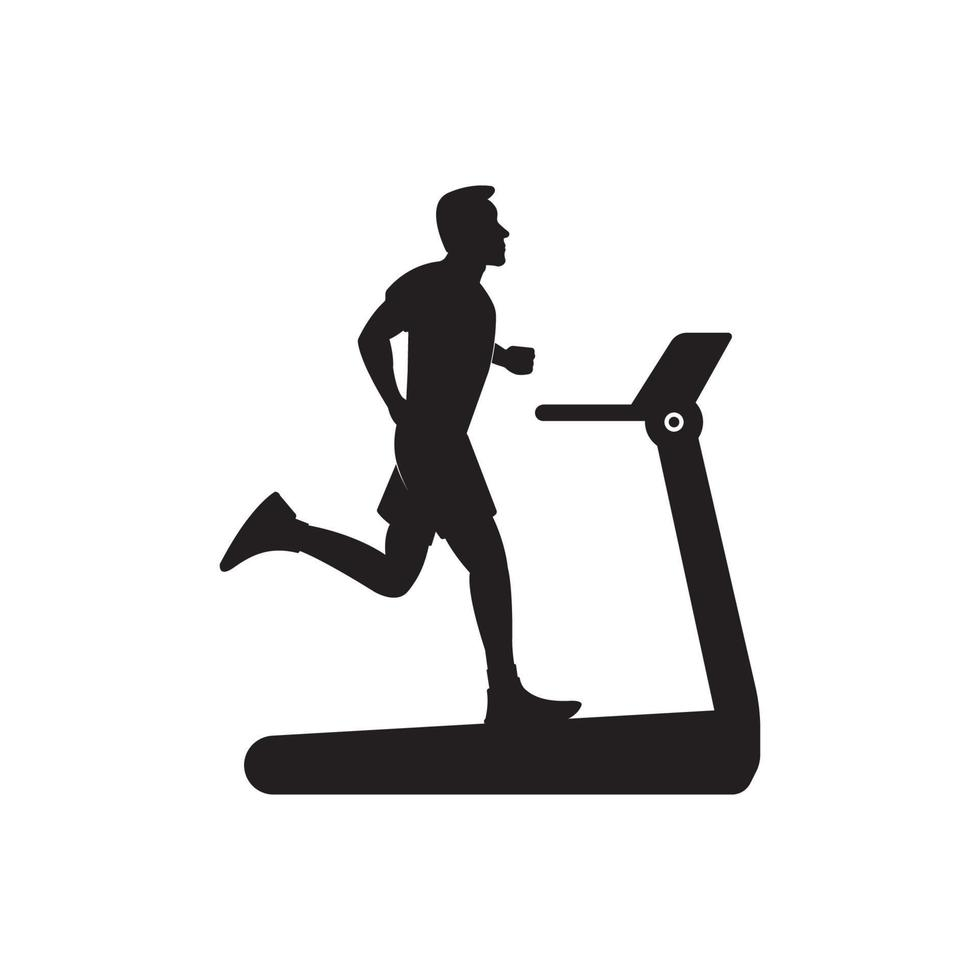

Exercise Description
Walk or run on the treadmill, adjusting speed and incline to match your fitness level. Aim for a steady pace that challenges your cardiovascular endurance. A good excercise for warm-up.
Duration
Beginners: 10-20 minutes
Video Implementation